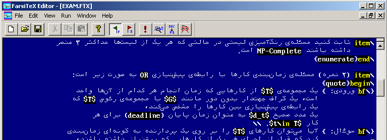

This document serves as a very concise manual for using FarsiTeX Editor (version alpha 8.7 and higher) in Micros*ft Wind*ws. We have done our best to keep the editor compatible to the D*S FarsiTeX Editor as long as the features did not specifically belong to B*rland's Turb* Vision. So if you have used FarsiTeX before you will only need to skim the document to learn the new hot keys
Please consult the readme.txt
(included in the distributions you have downloaded) to learn more about installing and
troubleshooting FarsiTeX. Since FarsiTeX Editor is distributed as
part of FarsiTeX distribution, you only need to follow readme.txt
instructions in the setup program to get the editor running.
However, it is possible that newer versions of the editor
become publicly available at www.farsitex.org
in separate installable download bundles. In such cases, you will certainly find a
change log that lets you know about the recent bug fixes.

Figure 1: FarsiTeX Editor in Action!
Handling bidirectional text is the most complicated issue you have to learn about the editor. Before explaining bidirectional editing features, we should make a distinction between two important concepts: line mode and caret mode.
A line is said to be in Farsi mode iff it extends from the right to the left edge of the window. Conversely, a line is said to be in English mode iff it extends from the left to the right edge of the window. Lines in the latter mode always start with a '>' symbol. You should note that this symbol is internally used by FarsiTeX and is not treated as a character in your document.
The caret (not the line) is said to be in Farsi mode iff a text producing key press results in Farsi text. Conversely, the caret is said to be in English mode iff a text producing key press results in English text.
Example: When you start a new document, the line and the caret are both in Farsi mode.
All you have to know for manipulating your bidirectional document is learning the following 8 rules:
Use CTRL+E to switch caret mode to English.
Use CTRL+F to switch caret mode to Farsi.
Use CTRL+G to toggle caret mode.
Type '>' (regardless of the caret mode) to switch an empty line to English mode.
Type an English '>', i.e. type '>' when the caret is in English mode, at the end of a line which is in Farsi mode to switch the line mode to English.
Use CTRL+J to switch an English line to Farsi.
Use delete and backspace keys (regardless of the caret mode and the line mode) to erase your text. You should note that these keys show different behaviors in different combinations of caret/line modes.
Use CTRL+Y (regardless of the caret mode and the line mode) to omit a line from your document.
Use SHIFT+B and SHIFT+SPACE to change a Farsi letter to its upper-case form.
In this section, we only discuss the menu options which are specific to the editor (after all, who's gonna read this document to learn about what Open and Save commands do, ha?)
Menus:
View:
Options:
Always start next line in Farsi mode: A new line is always started in Farsi mode after pressing Enter even if your current line is in English mode. Turn this option off if you want the newly created line to start in English mode if your current line is in English mode.
Preserve caret state after Enter is pressed: The caret for a new Farsi line is always in Farsi mode after pressing Enter at the end of a Farsi or English line even if you were typing English text before pressing Enter. Turn this option off if you don't want Enter key presses to affect your caret mode.
Caret mode switching affects Farsi text: Pressing CTRL+G, CTRL+F, CTRL+E changes the case of Farsi letters by default. Turn this option off if you are in the habit of pressing CTRL+G, CTRL+F, or CTRL+E with no special reason!!
Syntax highlighting on: Turn the option off if you do not want FarsiTeX syntax highlighting.
Run:
Run FarsiTeX (CTRL+F9): Invokes FarsiTeX typesetting engine and produces a DVI file.
Run View (CTRL+F8): Invokes MikTeX's DVI Viewer (YAP).
Convert FTX to TEX (CTRL+F7): Invokes FarsiTeX-to-TeX file converter. You usually invoke this converter explicitly only to convert FTX files which are to be included in other FTX files.
DVIPS (CTRL+F11): Invokes DVIPS utility which converts your DVI file to a PS file.
Run GSView (CTRL+F12): Invokes GSView utility. You will
get an error message if GSView is not installed on your computer. Please
consult FarsiTeX readme.txt for more information about how
to download and install GSView
Note: FarsiTeX Editor does not directly support printing anymore, so there is no Print option in the File menu. You should invoke YAP ( MikTeX's DVI Viewer) through View command in the Run menu and print your document in YAP.
Use F6 to toggle between different view panes.
Note that this is a standard feature in MDI applications running on Wind*ws
platform.
Note: The options set through the View
menu only affect the view that has with the input focus. So different views
of the same document can have different settings.
As you may have seen by now, multiple FarsiTeX documents can be opened and manipulated by the editor at the same time. You can used Wind*ws menu or CTRL+F6 to toggle between different documents.
The editor comes with two configuration files for customizing
colors. colors.ftc defines a set of RGB colors, and colorsetting.ftc
associates each coloring feature to a color defined in colors.ftc
. Please consult the comments in these two files for detailed information.
At the time of this writing, the editor supports five options that can be permanently
configured for documents and views:
Syntax highlighting, file backups, clipboard import wrap size, bracket/brace pairing, and dash behavior in
Farsi numbers.
See options.ftc comments for more details.